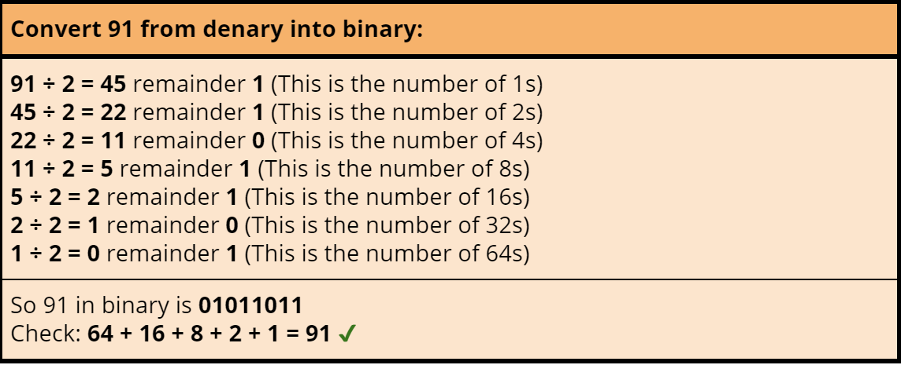
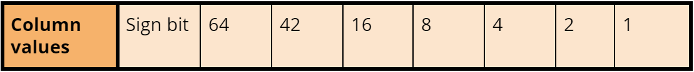
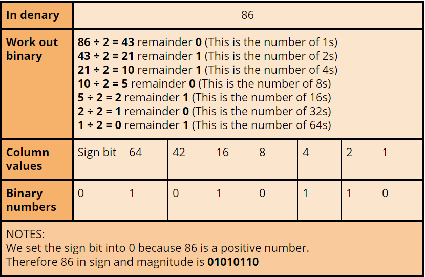
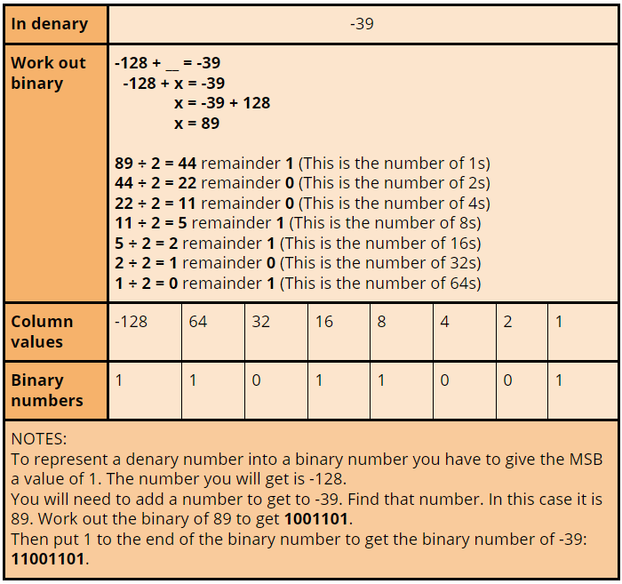
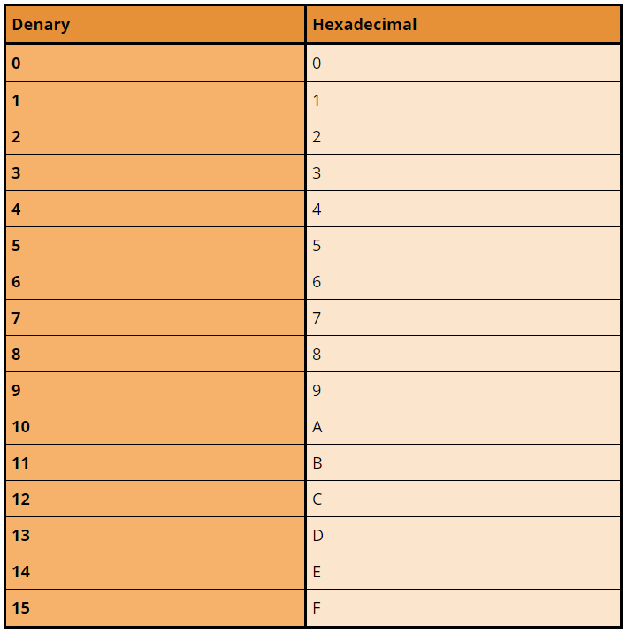

Data Types are needed to tell the computer what type of data we are entering. Different data types are stored and processed by the computer in different ways. Computers can't instantly recognise types of data without us telling the computer what type of data is being processed and stored.
The main data types are:
| Type | Description | Examples |
|---|---|---|
| Character | Single letters, digit, symbol, or control code | W, d, 9, ), 2, : |
| Strings | A sequence of alphanumeric characters | sadfads, JjiIOAjks, *1Hi£"65 |
| Boolean | One of two values | True or False | Integer | A whole number with no decimal parts | 789, -8, -232, 13, 2 | Real | Numbers that can be decimals or have fractional parts | 132.2, -12.3, Π |
Representing text
All data stored in a computer is stored in binary therefore data types are stored in binary. To make data readable by all computer systems an approach had to be implemented. One approach to represent characters and strings is ASCII.
In an ASCII table each character of the alphabet, special symbols and control code are represented by the agreed binary patterns.
ASCII is based on an 8-bit binary pattern (consisting of seven bits but also one parity bit - a bit that makes the binary number odd/even) which gave a possible combination of 128 separate characters.
Extended ASCII uses 8 bits and was able to give a possible combination of 256 separate characters.
Unicode was originally based on a 16-bit binary pattern which allowed a more than 65000 characters to be represented. But this was quickly updated to remove the 16-bit restriction.
The original ASCII takes up the first 256 characters of the Unicode character set.
 Here is an ASCII table
Here is an ASCII table
Boolean data
Boolean is a data type that can take one of two values either TRUE or FALSE. 1 represents TRUE and 0 represents FALSE.
Boolean data only requires one bit to store a value but is stored in one byte for convenience.
Representing positive integers in binary
Binary is a number system based on 2. The column values for 8-bit is shown below:

Binary numbers consist of 1s and 0s. To convert from binary to denary add the column values together for every column containing a 1, ignore all the 0s. For example a binary number of 01010110 will be:

To convert from denary to binary divide by 2 and record each remainder - do this until you reach 0.
{kind=link}
Representing negative integers in binary
You can represent negative integers in two ways: Sign and Magnitude, Two's complement
Sign and Magnitude is where the most significant bit (the bit in a multiple-bit binary number with the largest value) stores if the value is a positive or negative. This makes arithmetic within the computer complex. Here are the column values for 8-bit numbers:
{kind=link}
When storing the sign bit, store a positive number as 0 and a negative number as 1.
{kind=link}
Two’s complement is where the Most Significant Bit is considered negative if it is given a value of 1; in an 8-bit number the largest column value is -128 instead of 128. This makes arithmetic within the computer a lot easier to calculate.

Here is an example:
{kind=link}
Representing numbers in Hexadecimal
Hexadecimal is a number system with a base of 16. Computers don’t work in hexadecimal - they work in binary. Hexadecimal is used to make writing and reading binary numbers a lot simpler. For example FDA5 is a lot easier to read and write that the binary number of that value 1111110110100101. In hexadecimal the column headings are:

Because digits are used to represent the values 0 to 9 we have to use the letters (A-F) to represent the values 10 to 15 in hexadecimals.
Images, Sound, Instructions
All data is stored in binary therefore images, sound and instructions are stored as binary patterns.
In an image a black can be represented as 1 and white is represented as 0. Therefore one black pixel requires 1 bit. If you had 8 pixels in a row you would have a byte.